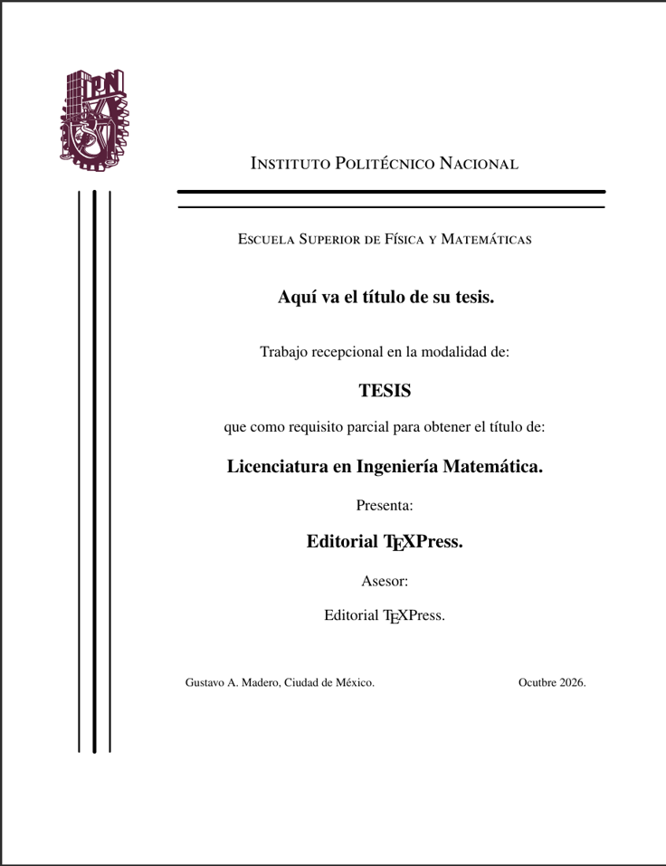
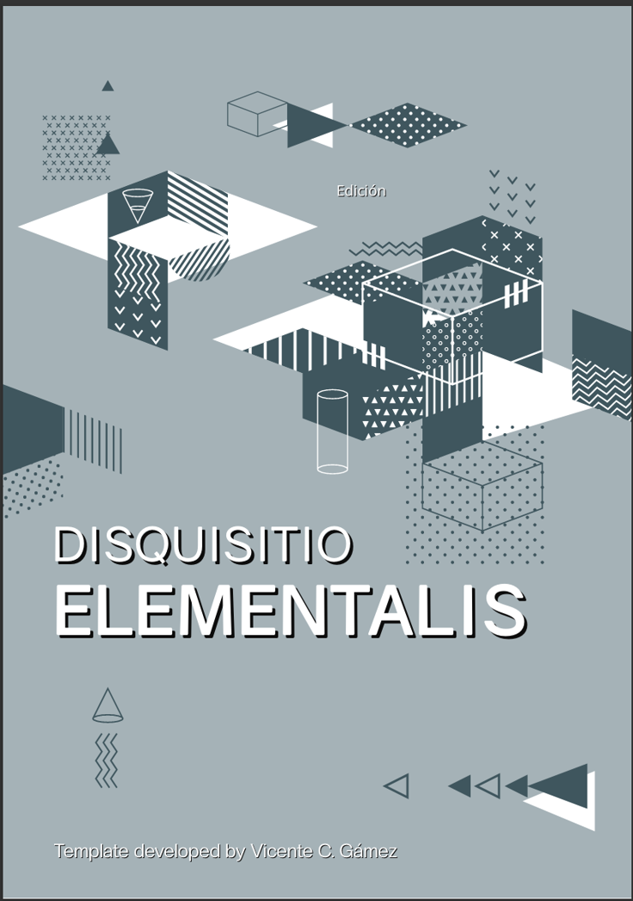

Maquetación Profesional
Transformamos tus manuscritos en obras editoriales impecables. Especializados en documentos de alta complejidad técnica: tesis doctorales, artículos científicos (papers) y libros técnicos.
- Manejo impecable de bibliografías complejas (BibTeX / Biber).
- Composición matemática avanzada y tipografía precisa.
- Cumplimiento estricto de las normativas de formato de universidades y revistas (APA, IEEE, Nature, etc.).
Gráficos en TikZ
Las imágenes pixeladas restan credibilidad a un buen documento científico. Desarrollamos gráficos 100% vectoriales integrados nativamente en tu código fuente mediante TikZ y pgfplots.
Diagramas Complejos
Flujogramas, árboles de decisión, circuitos eléctricos y diagramas de bloques renderizados a la perfección.
Gráficas Numéricas
Importación de datos directos (CSV) para generar gráficas matemáticas 2D y 3D con tipografía coincidente.
Clases Personalizadas
Si te encuentras copiando y pegando el mismo preámbulo masivo en cada documento, necesitas una clase .cls o paquete .sty propio.
Diseñamos plantillas institucionales desde cero. Autores de soluciones como Disquisitio Elementalis y configuraciones avanzadas como deexam para evaluación académica.
Trabajemos juntos